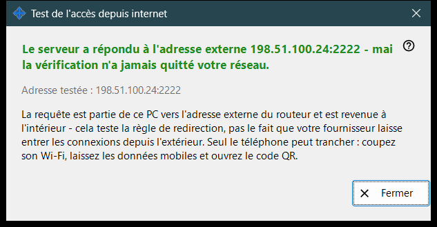
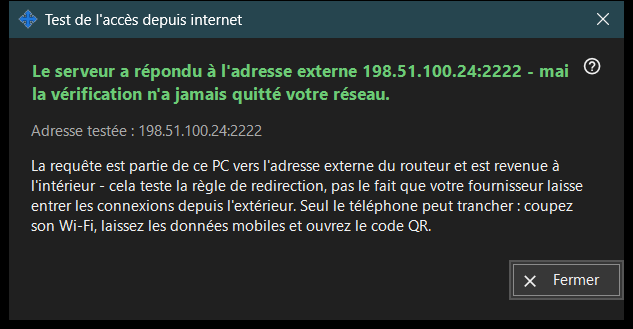

Test de l'accès depuis internet
Objectif
Vérifie depuis ce PC si l'adresse partagée répond comme un serveur SFTP. Elle s'ouvre depuis le bouton «Tester l'accès depuis internet» de la fenêtre principale et affiche l'adresse testée, un verdict et une explication.


Dans cet ordre
- Ouvrez la fenêtre ; elle affiche l'adresse et lance aussitôt la vérification.
- Attendez le titre du résultat.
- Lisez la ligne de détail en dessous.
- Si le résultat n'est pas concluant, répétez la vérification depuis le téléphone, Wi-Fi coupé et données mobiles activées.
- Appuyez sur «Fermer».
Les éléments
Adresse testée
«Adresse testée : ..» affiche l'hôte et le port. Pendant la vérification, la fenêtre indique «Test de ..». Si aucune adresse n'est connue, le résultat est «Pas encore d'adresse internet.» ; une adresse mal formée donne «Adresse invalide.»
Verdicts
«Serveur SFTP joignable» - le port a répondu par une bannière SFTP. «Port ouvert, mais aucune réponse SFTP» - quelque chose écoute sur le port, mais ce n'est pas notre programme ; vérifiez que la règle du routeur mène à ce PC et au port du partage. Une connexion fermée avant la réponse peut indiquer la limite de connexions ; réessayez. L'absence de réponse depuis ce PC signifie que le routeur bloque peut-être, depuis l'intérieur, sa propre adresse.
Pourquoi un résultat peut ne pas être concluant
La requête quitte ce PC vers l'adresse externe du routeur et revient directement à l'intérieur ; elle teste donc la règle de redirection et non la question de savoir si le fournisseur laisse entrer les connexions de l'extérieur. Seul le téléphone peut trancher : coupez son Wi-Fi, laissez les données mobiles activées et ouvrez le code QR. S'il ne peut toujours pas se connecter, configurez la redirection de port avec le bouton «Comment configurer l'accès internet».
Paramètres du gestionnaire · Paramètres de partage SFTP · Paramètres du serveur d’échange